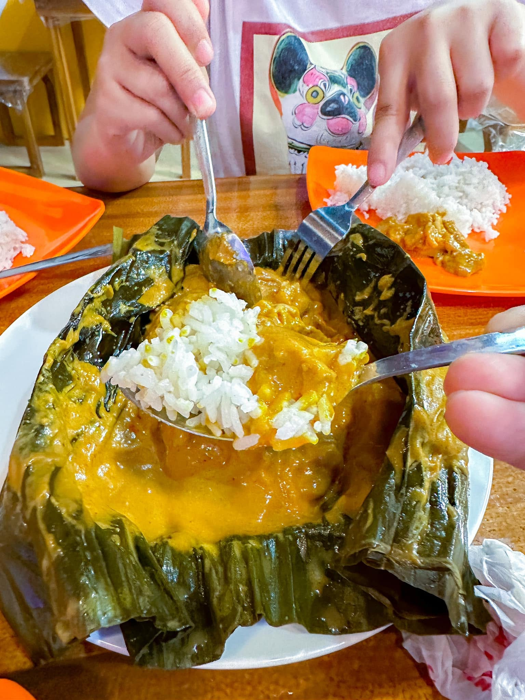

DelicacyTamalos
Catbalogans tamalos is a variation of the tamale, a dish of Mexican origin, which found its way to the Philippines via the Manila-Acapulco Gallen trade. Rice dough is filled with pork and flavored by a sauce called 'pipi-an', which is made of ground rice or peanuts with chilies and pasotes to produce that piquant flavor and zing that Mexicans love which Catbaloganons love too.